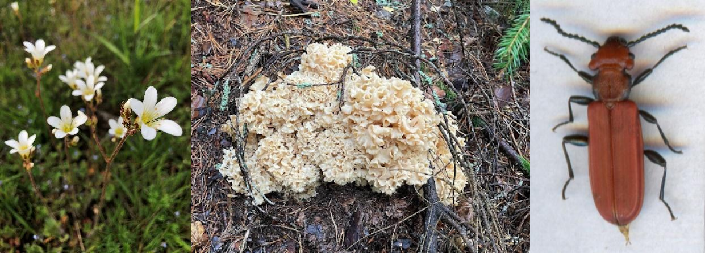

Föreningen Malma by och ängar bjuder in: Träffa våra naturkunniga experter
Tisdag 13 juni kl. 18.00

Kom med oss ut på ängarna och till Bäcklösa Natura2000!
Cajsa Björkén och Björn Bråvander delar med sig av sina kunskaper och hjälper oss se allt det fina som finns i vårt stadsnära område Malma by och ängar.
En stilla kunskapspromenad i lättgången terräng. Vi ses vid skylten vid Slädvägen/Barkspadevägen (även vid regnigt väder).
Välkommen!
Cajsa Björkén
Cajsa är ekolog och naturvårdare med stort intresse för såväl skog som kulturlandskap. Hon arbetar med naturvård på Upplandsstiftelsen men spenderar även en stor del av sin fritid i naturen i jakt på arter och naturupplevelser. Cajsa bor i anslutning till beteshagarna vid Malma och har ett stort engagemang för bevarandet av naturvärdena i området.
Björn Bråvander
Björn är en artjägare som är intresserad av det mesta i naturen. Kanske särskilt rödlistade- och signal-arter. Specialområdet är svampar. Björn driver eget företag, i vilket han inventerar svampförekomst i potentiellt skyddsvärd skog och håller svampkurser. Han vill inte presentera sig själv som någon insektsexpert, men som boende i Ulleråker börjar han bli väl bekant med förekomster av den starkt hotade cinnoberbaggen i vår närmiljö här i Uppsalas södra stadsdelar.